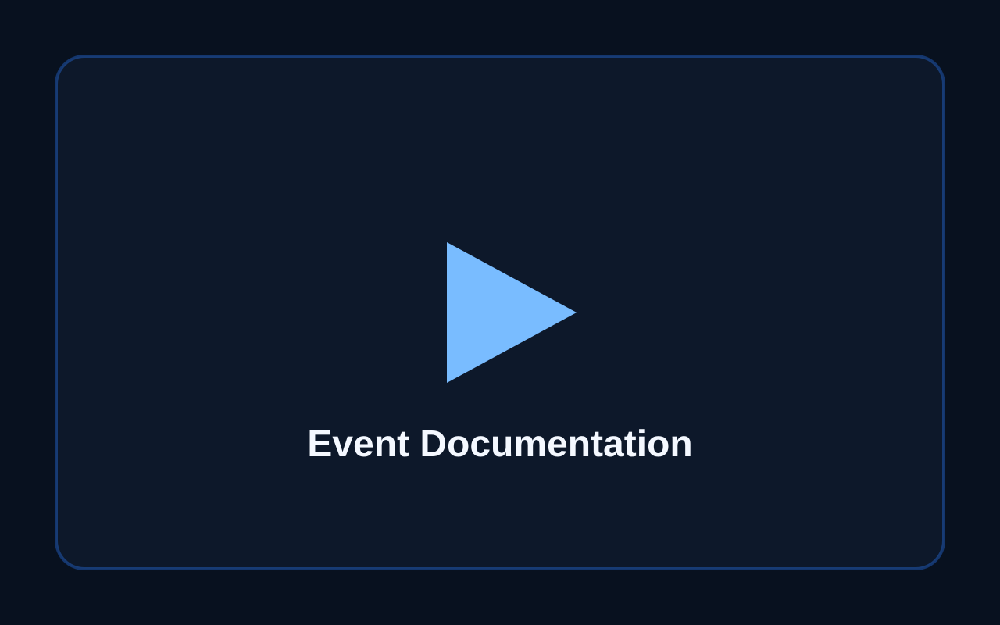
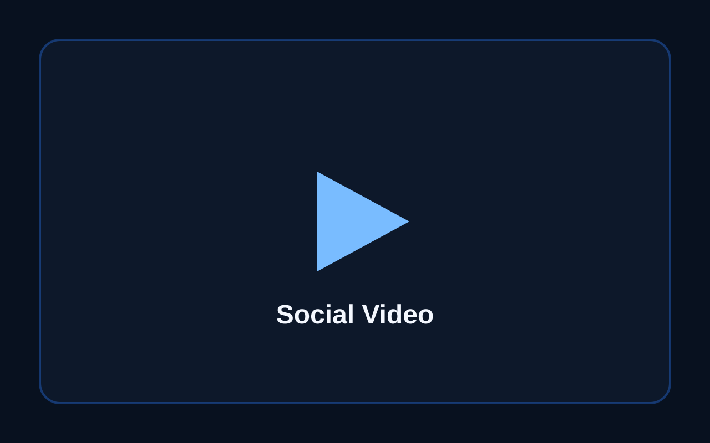
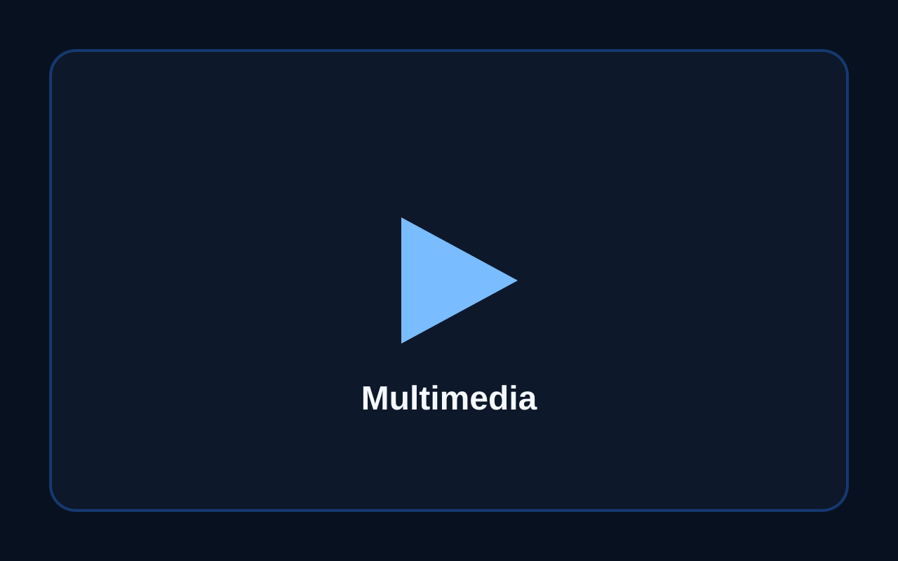

Ready SlotDokumentasi Kegiatan Kampus
Slot untuk video dokumentasi acara kampus, organisasi, atau kegiatan publikasi.
Card di bawah ini disiapkan sebagai gallery video. Nanti bisa diganti dengan thumbnail, link YouTube, atau file video.

Ready SlotSlot untuk video dokumentasi acara kampus, organisasi, atau kegiatan publikasi.

Ready SlotSlot untuk konten reels, video promosi, recap kegiatan, dan kebutuhan publikasi digital.

Ready SlotSlot untuk dokumentasi peran sebagai operator multimedia saat acara berlangsung.